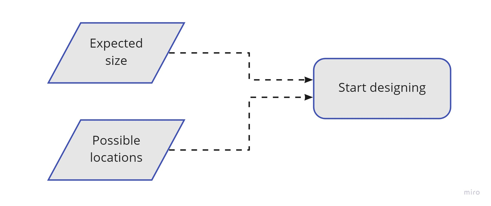
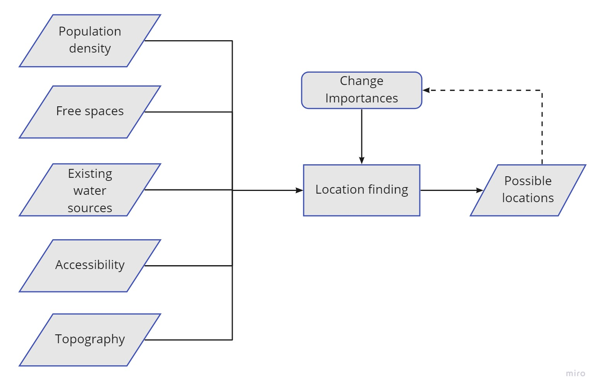
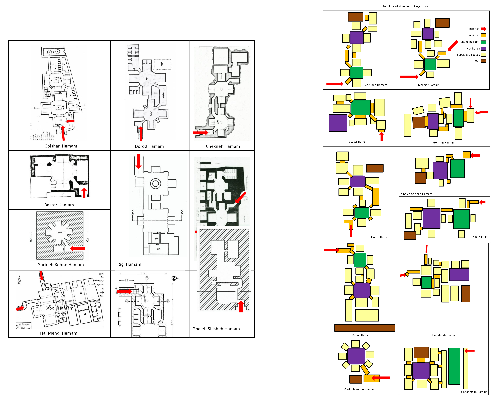
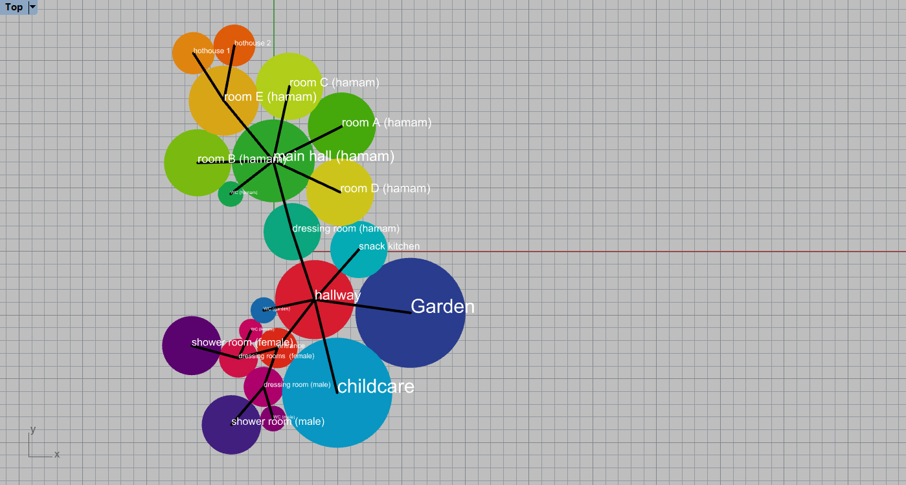
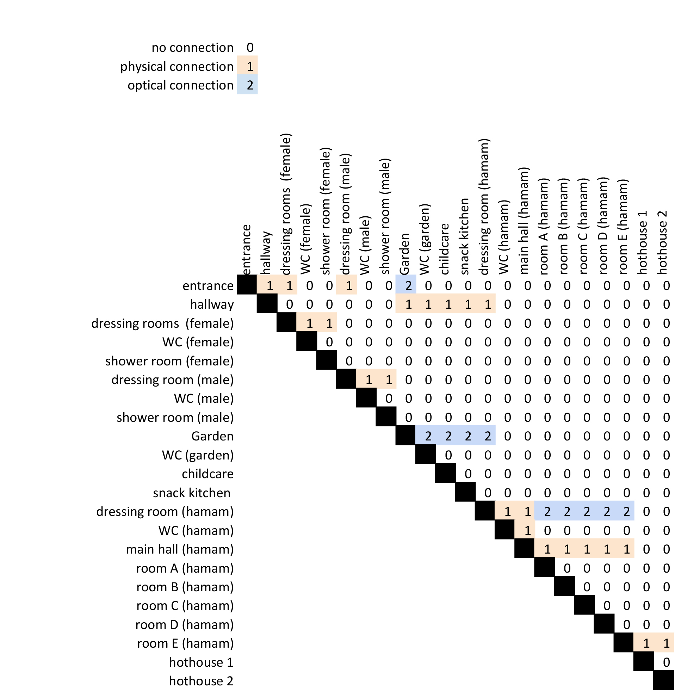
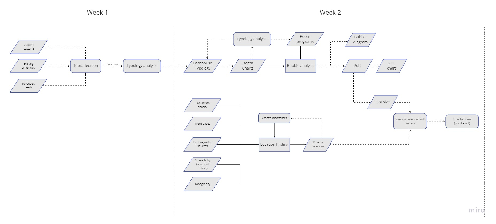
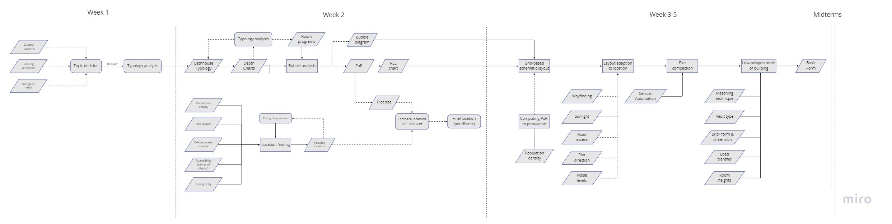

Configuring:
Space planning for the neighbourhood and the key building types
To start designing the Hammam, first the design of the designing process has been created. As stated in
week 1 we assume one Hammam per district.
Step one in the design is determining the location and the size of the Hammam. Combining the expected
size and best locations is therefore the main structure of our flowchart, as shown in Fig. 1

Fig. 1: Basic structure of the flowchart in week 2
Location
Creating an Hammam in the camp will require some thinking about the location. Already in week 1
we defined the important points where the Hammam should be placed. Density and Walking distance being the most important ones.
We created an algorythm to find the best spots for the Hammam, using previously described parameters.
Density was calculated with the density map, loaded into the Image Sampler of Grasshopper.
The inverse of Density overall means more space to use and less families to bribe/offer alternatives.
Walking distance was determined as, the closer to the centre of a district, the better.
Also the other attractionpoints have been taken in account. A grid was made for the entire camp and the algorythm gave a result for each point (the higher -> better).
Now we edited the "point-system" to give less results and make it dependend per district. This loop can be seen in the following GIF:
{kind=link}

Fig. 2: Feedback loop on the filtering of points within each district.
The whole location finding can be summarized in the following flowchart.

Fig. 3: Flowchart towards finding the locations
Size
Now we have a lot of possible locations, we need to know the size of the plot to compare with the location and make a PoR.
Firstly we analysed the topography of "Bathhouse" and how they work, which resulted in some depth charts
After reviewing the depth charts and layouts of the bathhouses and other hammam, we chose a "standard" Hammam to design with.

Fig. 4: Layout and depth charts of several bathhouses
For this Hammam we created a depth chart, which became imput for the Bubble Diagram, together with the needed rooms.

Fig. 5: The bubble diagram working with random sizes
{kind=link}
Program of requirements
To estimate the size 5 different historical hammam are analyzed. The Garineh Kohne, Golshan, Dorod, Chekneh and the Kaboli Hammam. The spaces of the mentioned hammams were separated into following functions: dressing room, corridors, hot house, outdoor pool and the subsidiary room. This way we could find out how much percentages of the total floor plan each function requires. This can be seen in the figure “required space per function analysis_percentages per function”.
Since the result is in %, it allows us to separate the estimated hammam size in its different functions and change the room sizes according to the different amount of visitors in each district.
As a reference for the general hamam size we took the Zygeheimi Hammam as an example. It has a surface of 400 m2 and it can host 25 to 30 people per hour. This led to following Hammam size :
Picture of gh table with hamam size.
The design project:
We try to derive the spatial and functional composition of the complex from analysing historical buildings the population. Since we can not find all the data we need we have to make some estimation, like for example 20% single parents.
will be visitable 20 hours per day, 7 days per week, in which duration the all the habitats over 12 years old will be able to use the facilities once. if it is 400 m2 it can host max. 4200 (= 30x20x7) people per week so, we can have the ratio of 10,5 people per m2 (only for the hammam area) We estimate that 20% of the visitors are single parents and have to bring their kids to the childcare ( 2 kids per person ) - the size changes in each district according to the population The washing facilities are estimated to have around 20% of the hamam, and include already the entrance to the whole complex.
| Function | Open/Closed | Orientation | Size (m2) |
|---|---|---|---|
| Entrance | Open | Street | 26 |
| Hallway | Open | - | 12 |
| Washing rooms (female) | Closed | - | 26 |
| Washing rooms (male) | Closed | - | 26 |
| Garden | Open | Centre | 488 |
| Toilet (garden) | Closed | - | 14 |
| Childcare common room | Open | Centre | 40 |
| Childcare group room | Closed | - | 14 |
| Childcare care room | Closed | - | 14 |
| Childcare equipment room | Closed | - | 8 |
| Childcare storage room | Closed | - | 4 |
| Hammam hall | Open | Centre | 52 |
| Dressing room (hamam) | Closed | - | 52 |
| Hammam hot houes | Open | - | 56 |
| Tea (hammam) | Open | - | 22 |
| Cleaning (hammam) | Open | - | 22 |
| Tech (hammam) | Closed | - | 22 |
| Water tanks (hammam) | Open | - | 22 |
| Private (hammam) | Closed | - | 22 |
| Hot pool (hammam) | Open | - | 22 |
| Cold pool (hammam) | Open | - | 22 |
| Wc (hammam) | Closed | - | 22 |
Tab. 1: Program of requirements (to be finalized)
Now we have the PoR, we can further describe the relations between the rooms. We make two different connection: physical and optical connections.
The following Bubble diagram presents the pysical connection within the rooms and the sizes of the rooms. Also, optical connections are present, shown in the REL diagram.
Fig. 6: Bubble Diagram of the program of requirements

Fig. 7: REL Diagram of the program of requirements
Combining
Now we have some possible locations, but some are not viable to build the Hammam, mostly due to houses standing on the location.
Choosing the location is hard to do parametricly, as the house cannot be loaded in. The GIF below shows the chosen location for the districts. We will further continue developing
a Hammam in district 10. All locations are chosen to have the less amount of houses removed.

Fig. 8: Feedback loop on the filtering of points within each district.
Flowchart
The flowchart below shows all the processes that took place this week. Its basicly a sum-up of previously described processes.

Fig. 9: Total flowchart of week 2Enlarge
{kind=link}
Next steps
Week 2 resulted in a base configuration of the building with an suggested location, size and configuration. The next weeks we will continue with formfinding. The main inputs for the next phase should corrospond with the outputs generated in this phase. The Bubble and REL diagrams will provide the inputs for the basic shape. On the side we already generated some knowledge towards the use of masonry in vaults or domes. This is important when creating a grid, generated from the Bubble and REL diagrams. Vault overall support and easier grid and allow for higher free-heights. To adapt the layout to the location and to fit a Hammam, we will have to research the use, noise, routing, sunligt and information about the plot. Then to generate a mesh of the building, knowledge of masonry and load transfer is needed. The previous is also shown in the flowchart below.

Fig. 10: Total flowchart of week 2 and expectations for further design. Enlarge
{kind=link}